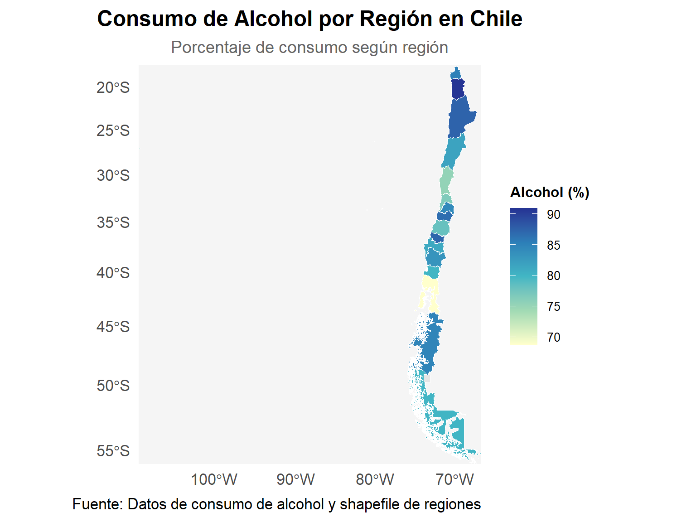

Patrones latentes de consumo en personas que declaran haber consumido alcohol y marihuana en le último año en la ENPG 2022
Informe
Autores/as
Ariel Álvarez
Natalia Vacas González
Fecha de publicación
25 de enero de 2025
1 Relevancia del caso de estudio:
El consumo extendido de susbtancias psicoactivas, tales como el alcohol y la marihuna, constituye un problema de salud pública con consecuencias tanto en el sistema asistencial, como en la productividad a lo largo de la vida, el entorno social y familiar y la salud de las personas usuarias de este tipo de substancias (Altamirano Altamirano, Catalán Sandoval, y González Sepúlveda 2024)
El informe “El Consumo de Alcohol en Chile: Situación Epidemiológica” (Prevención y Rehabilitación del Consumo de Drogas y Alcohol (SENDA) 2024) destaca el consumo de alcohol como principal factor de riesgo que causa muerte y discapacidad en Chile, representando el 12,4% de los años de vida saludables perdidos por muerte o discapacidad (AVISA). Junto a lo anterior, también se señala la dependencia del alcohol como una de las cuatro principales enfermedades que generan carga de enfermedad en el país, explicando un 7,7% de los AVISA perdidos.
Adicionalmente, en el informe “Marihuana” (Prevención y Rehabilitación del Consumo de Drogas y Alcohol (SENDA) 2020) se destaca que Alrededor del 9% de los consumidores adultos desarrollan adicción a la marihuana. Este porcentaje aumenta al 17% si el consumo comienza en la adolescencia y al 25-50% en consumidores diarios. Además de los efectos adictivos, SENDA señala los efectos sobre la salud respiratoria, el incremento del riesgo de psicosis y el deficit cognitivo (particularmente en adolescentes), el desempeño académico y laboral, en términos de ausentismo y menor productividad y los riesgos cariovasculares.
En función de estos antecedentes, se vuelve relevante trazar una estrategia para la identificación de patrones latentes de consumo, percepción de riego y acceso, en personas usuarias de alcohol y marihuana en miras a:
Diseñar políticas y estrategias de intervención más específicas y efectivas para la población consumidora.
Priorizar recursos hacia grupos de mayor riesgo.
Promover una comprensión más matizada del consumo de estas substancias psicoactivas.
A continuación, se presenta el objetivo general y los objetivos específicos del caso.
2 Objetivo:
2.1 Objetivo General:
Identificar patrones latentes de consumo, percepción de riego, opinión pública y conductas de riesgo en la conducción en personas que declaran haber consumido alcohol y marihuna en el último año usando datos del Estudio Nacional de Drogas en Población General de Chile 2022.
2.2 Obetivos específicos:
Examinar las caracterísiticas sociodemográficas y la distribución regional de las personas que declaran haber consumido alcohol y/ o marihuana en el último año, asi como de otras variables críticas relacionadas con la percepción de riesgo, la opinión pública y conductas de riesgo en la conducción.
Identificar variables relevantes para la elaboración de grupos o perfiles de personas que declaran haber consumido alcohol y/ o marihuana en el último año a través de la extracción de características, aplicando el análisis de componentes principales (PCA)
Explorar las agrupaciones producto de la aplicación de de algoritmo de clustering jerarquico aglomerativo.
3 Componentes clave de la arquitectura de datos de la propuesta:
El presente proyecto se rige bajo el modelo ETL (Extract, Transform, Load) para el proceso de integración y gestión de datos y, particularmente, en la creación de Data Warehouses o sistema de análisis de datos. A continuación desglosaremos cada una de las etapas que lo componen:
3.1 Extracción:
Inicialmente, se trabajó con un conjunto de bases de datos dumy procedentes del Estudio Nacional de Drogas en Población General (ENPG 2022). Posteriormente, habiendo trabajado el objetivo de unión de bases de datos mediante la fundión fulljoint, se constató la perdida de un número relevante de casos. Particularmente, aquello que respondían a la categoría consumo de marihuna en el último año. Junto a lo anterior, ampliamos la exploración de variables de interés. Por esta razones, se decidió trabajar con la base original del ENPG 2022.
Para la importación y exploración inicial de las bases de datos dummy y la ENPG 2022 original utilizamos los paquetes”readxl”, “haven” y “rio”.
Junto a estos paquetes instalamos: - Para la manipulación: “dplyr” - Para la elaboración de los estadísticos descriptivos: “psych”, “tidyr”, “table1”,“knitr”, “kableExtra” y “survey” - Para las visualizaciones: “corrplot”, “ggplot2”, “plotly”
Código
# Lista de paquetes necesariospaquetes <-c("dplyr", "haven", "rio", "ggplot2", "psych", "tidyr", "table1", "knitr", "kableExtra", "survey", "plotly", "sf", "tmap")# Función para instalar y cargar paquetesload_packages <-function(paquetes) { paquetes_faltantes <- paquetes[!paquetes %in%installed.packages()]if(length(paquetes_faltantes) >0) install.packages(paquetes_faltantes)invisible(lapply(paquetes, library, character.only =TRUE))}# Ejecutar la función de carga de paquetesload_packages(paquetes)
Warning: package 'dplyr' was built under R version 4.4.2
Warning: package 'survey' was built under R version 4.4.2
Código
# Borrado de objetos, data frames, vectores y otros elmentos del environment previos # a la ejecuión de presente archivo. rm(list =ls())
Código
# Aquí importamos la base desde github, senda <-import("https://raw.githubusercontent.com/nvacasgonzalez/proyecto_capstone_AA_NV/main/data/senda.xlsx")
3.2 Transformación:
A continuación se describe la serie de oporaciones realizadas para manipular nuestra base de datos final, es decir, la base ENPG 2022 original.
Se aplicó el factor de expasión especificado en la encuesta a la base de datos para poder trabajar con valores representativos a nivel nacional y regional
Se construyeron 2 variable de interés de tipo binario:
oh_rec: que incluyen a personas que declaran consumo de alcohol en el último mes o hace menos de un mes y más de un año
mar_rec: que contempla a personas que declaran consumo de marihuana en el últimos mes o hace menos de un mes pero menos de un año.
Código
#Seleccionamos variables referentes al consumo de alcohol y marihuana, variables sociodemográficas y factores de expansión.# Además, generames dos varaibles nuevas sobre la prevalencia del consumo de Alcohol o marihuanasenda <- senda %>%select(FOLIO, OH_1, OH_4, MAR_1, MAR_4, EDAD, REGION, SEXO, DP_12, DP_16, OP_1_1_Rp, OP_1_2_Rp, OP_1_4_Rp, OP_2_2_Rp, OP_2_3_Rp, OP_2_5_Rp, CC_2, CC_3, PR_1_2_Rp, PR_1_3_Rp, PR_1_4_Rp, PR_1_5_Rp, FACTOR_EXPANSION, UPM) %>%rename_with(tolower)#Variable Marihuana y senda$mar_rec <-with(senda, ifelse(mar_4 %in%1:2, 1, 0))senda <- senda[senda$mar_1 %in%c(1, 2), ]ponderador <-svydesign(ids =~1, data = senda, weights =~factor_expansion) # Va el ponderador por cambios en la base# Variable alcoholsenda$oh_rec <-with(senda, ifelse(oh_4 %in%1:2, 1, 0))senda <- senda[senda$oh_1 %in%c(1, 2), ]ponderador <-svydesign(ids =~1, data = senda, weights =~factor_expansion) # Va el ponderador por cambios en la base
El resto de alternativas de las variables originales realtivas al consumo de alcohol y marihuana (Hace más de un año, No sabe -88-, No contesta -99- ) fueron recodificadas como valores NA. Este conjunto de valores fue extraido de las operaciones mediante la función ifelse.
Se recodificaron, y normalizaron algunas variables críticas adicionales que nos interesaba incluir en nuestro análisis:
Por último, se aplicaron técnicas de estandarización al conjunto de variables de interés utilizadas para la generación de clusters en base al algoritmo de jerarquización aglomerativa.
3.3 Carga:
Nuestro Back Room o ambiente de trabajo donde se realizan todas las transformaciones, integraciones y armonizaciones de los datos es el presente repositorio de Github. Especificamente, nuestra carpeta data donde se enncuentra las base de datos ENPG 2022 original y las bases dumy.
En el caso de el Front Room o ambiente donde se comparten y publican los datos transformados y optimizados para consulta y análisis se ha generado la presente HTML producida en Github para la publicación de resultados.
4 Modelo entidad - relación y modelo lógico conceptual.
Las variables seleccionadas para el presente proyecto se agupan en:
Variables de consumo de alcohol y marihuna:
consumo del alcohol durante los últimos 30 días y consumo de alcohol hace más de un mes pero menos de un año.
consumo de marihuana durante los últimos 30 días y consumo de marihuana hace más de un mes pero menos de un año.
Variables socio demográficas: edad, género, nivel socioeconómico y nivel educacional.
Variables de percepción de riesgo relacionadas al consumo de marihuana y/o alcohol.
Variables relacionadas a factores contextuales: consumo de drogas en el hogar ; dificultad en el acceso a la marihuana.
5 Exploración y análisis descriptivo de variables de interés:
Nuestra variable de interés fue generada a apartir de personas que afirmaron haber consumido alguna vez en su vida alcohol y/o marihuana (oh_1 y mar_1). Apartir de esto, se creó una variable para identificar a quienes consumen solo alcohol, solo marihuana y quienes consumen de ambos durante el último año (oh_4 y mar_4).
De esto, se identifica que el 64% de las personas consume solo alcohol, un 4% solo marihuana y un 32% consume alcohol y marihuana.
Código
# Generar la tabla ponderada para mar_recmar_pond <-svytable(~mar_rec, design = ponderador)tabla_ponderada_mar <-as.data.frame(mar_pond) %>%mutate(Porcentaje =round(Freq /sum(Freq) *100, 1)) %>%rename(Frecuencia = Freq) %>%filter(mar_rec ==1) %>%# Filtrar de consumidoresmutate(Consume ="Consume Marihuana") # Título# Generar la tabla ponderada para oh_recoh_pond <-svytable(~oh_rec, design = ponderador)tabla_ponderada_oh <-as.data.frame(oh_pond) %>%mutate(Porcentaje =round(Freq /sum(Freq) *100, 1)) %>%rename(Frecuencia = Freq) %>%filter(oh_rec ==1) %>%# Filtro de consumidores mutate(Consume ="Consume Alcohol") # Título # Unir ambas tablas en una solatabla_consumo_combinada <-bind_rows(tabla_ponderada_mar, tabla_ponderada_oh) %>%select(Consume, Frecuencia, Porcentaje) # Seleccionar y renombrar columnas# Mostrar la tabla combinada en HTMLtabla_consumo_combinada %>%rename("Tipo de Consumo"="Consume", # Renombrar la columna 'Consume'"Número de observaciones"="Frecuencia", # Renombrar la columna 'Frecuencia'"Porcentaje"="Porcentaje"# Mantener 'Porcentaje' igual ) %>%kable("html", caption ="Tabla de tipo de consumo") %>%#Titulo de la tablakable_styling("striped", full_width = F) %>%kable_styling(font_size =18) %>%# Tamaño de la letraadd_header_above(c(" "=1, "Estadísticos"=ncol(tabla_consumo_combinada) -1))
Tabla de tipo de consumo
Estadísticos
Tipo de Consumo
Número de observaciones
Porcentaje
Consume Marihuana
1362277
10.6
Consume Alcohol
6860200
53.2
A raíz de esto de analizaron variables sociodemograficas cruzadas sobre el tipo de consumo. Las variables sociodemográficas fueron sexo, edad, niveles de educación y tramos de ingreso. También otras variables como percepción de riesgo, accesibildiad y consumo en conducción.
5.1 Cruce de Sexo con consumo
Los datos descriptivos de la base nos muestra que en promedio hay más mujeres que hombres y que sobre el tipo de consumo se identifica que: Sobre consumos de ambos alcohol y marihuana, los hombres consumen más que las mujeres (63% y 37% respectivamente). Sobre solo un tipo de consumo los valores se invierten, los hombres consumen en medida más solo alcohol, mientras que las mujeres consumen en medida solo marihuana.
Código
# Tabla de Porcenajaje sexotabla_porcentajes_sexo <- senda %>%filter(mar_rec ==1| oh_rec ==1) %>%# Filtrar valores 1 de mar_rec y oh_recmutate( Variable =case_when( mar_rec ==1~"Consume Marihuana", oh_rec ==1~"Consume Alcohol" ),sexo =recode(sexo, `1`="Hombre", `2`="Mujer")) %>%group_by(sexo, Variable) %>%summarise( Frecuencia =sum(factor_expansion), # Sumar ponderaciones por grupo.groups ="drop") %>%mutate(Porcentaje =round(Frecuencia /sum(Frecuencia) *100, 1), # Calcular porcentaje totalPorcentaje =paste0(Porcentaje, "%")) %>%# Agregar el símbolo de porcentajeselect(Sexo = sexo, Variable, Porcentaje) %>%# Renombrar columnas para claridadpivot_wider(names_from = Sexo, values_from = Porcentaje) # Convertir columnas por sexo# Visualización de la tabla en HTMLtabla_porcentajes_sexo %>%rename("Tipo de Consumo"="Variable") %>%kable("html", caption ="Porcentaje de consumo por sexo") %>%kable_styling("striped", full_width = F) %>%kable_styling(font_size =15)
Porcentaje de consumo por sexo
Tipo de Consumo
Hombre
Mujer
Consume Alcohol
42%
38.7%
Consume Marihuana
12.5%
6.8%
Código
# Preparar los datos en formato largotabla_porcentajes_sexo_long <- tabla_porcentajes_sexo %>%pivot_longer(cols =c("Hombre", "Mujer"), names_to ="Sexo", values_to ="Porcentaje") %>%mutate(Porcentaje =as.numeric(gsub("%", "", Porcentaje))) # Convertir Porcentaje a numérico# Gráficografico_1 <-ggplot(tabla_porcentajes_sexo_long, aes(x = Variable, y = Porcentaje, fill = Sexo)) +geom_bar(stat ="identity", position ="dodge") +geom_text(aes(label =paste0(round(Porcentaje, 1), "%")),position =position_dodge(width =0.9),vjust =-0.5 ) +labs(title ="Porcentaje de Consumo por Sexo", x ="Tipo de Consumo", y ="Porcentaje") +scale_y_continuous(labels = scales::percent_format(scale =1)) +# Formato de porcentaje en el eje Yscale_fill_manual(values =c("Hombre"="lightblue", "Mujer"="lightcoral")) +# Colores personalizadostheme_classic()grafico_1
5.2 Cruce de Edad con consumo
La variable de edad en pro de temas de análisis fue agrupada en Tramos de edad en base a información del informe oficial de la Encuesta Nacional de Drogas 2022. Los datos iniciales descriptivos de Edad nos muestra que la media de edad de la encuesta son 42 años, una desviación estándar de 15,24 ampliandose relativamente alrededor de la media, y una skew de -0,11 lo que significa que hay un leve sesgo hacia edades más jovenes.
En cuanto al tipo de consumo: Los tramos de edad que consumen más alcohol y marihuana son las personas de 26 a 34 años con un 37%, mientras quienes menos consumen ambos son personas de 12 a 18 años con un 4%. Esto tiene sentido debido a las leyes en Chile donde está prohibido que menores consuman algún tipo de droga. En cuanto a personas que consumen solo alcohol son las personas mayores de 45 a 65 años con un 34%, mientras que los tramos edad que consumen solo marihuana son las personas de 26 a 34 años con un 31%
Código
describe(senda$edad)
Código
senda <- senda %>%mutate(tramos_edad =case_when( edad >=12& edad <=18~"12 a 18 años", edad >=19& edad <=25~"19 a 25 años", edad >=26& edad <=34~"26 a 34 años", edad >=35& edad <=44~"35 a 44 años", edad >=45& edad <=65~"45 a 65 años" ))# Tabla de porcentajes de Edadtabla_porcentajes_edad <- senda %>%filter(mar_rec ==1| oh_rec ==1) %>%# Filtro de solo los valores 1 mutate(Variable =case_when( mar_rec ==1~"Consume Marihuana", oh_rec ==1~"Consume Alcohol" )) %>%group_by(tramos_edad, Variable) %>%summarise(Frecuencia =sum(factor_expansion), # Sumar ponderaciones por grupo.groups ="drop") %>%mutate(Porcentaje =round(Frecuencia /sum(Frecuencia) *100, 1)) %>%mutate(Porcentaje =paste0(Porcentaje, "%")) %>%# Agregar el símbolo de porcentajeselect(-Frecuencia) %>%# Eliminar la columna 'Frecuencia' si no es necesariapivot_wider(names_from = tramos_edad, values_from = Porcentaje) # Convertir columnas
Código
# Preparar los datos en formato largotabla_porcentajes_edad_long <- tabla_porcentajes_edad %>%pivot_longer(cols =c("12 a 18 años", "19 a 25 años", "26 a 34 años", "35 a 44 años", "45 a 65 años"), names_to ="TramosEdad", values_to ="Porcentaje") %>%mutate(Porcentaje =as.numeric(gsub("%", "", Porcentaje))) # Convertir Porcentaje a numérico# Gráficografico_2 <-ggplot(tabla_porcentajes_edad_long, aes(x = Variable, y = Porcentaje, fill = TramosEdad)) +geom_bar(stat ="identity", position ="dodge") +geom_text(aes(label =paste0(round(Porcentaje, 1), "%")),position =position_dodge(width =0.9),vjust =-0.5 ) +labs(title ="Porcentaje de Consumo por Tramos de Edad", x ="Tipo de Consumo", y ="Porcentaje") +scale_y_continuous(labels = scales::percent_format(scale =1)) +# Formato de porcentaje en el eje Yscale_fill_manual(values =c("12 a 18 años"="lightblue", "19 a 25 años"="lightgreen", "26 a 34 años"="lightcoral", "35 a 44 años"="lightskyblue", "45 a 65 años"="lightgoldenrodyellow")) +# Colores personalizadostheme_classic()grafico_2
5.3 Cruce de Nivel educacional con consumo
Sobre el nivel educacional y el consumo de Alcohol y Marihuana hemos observado patrones bastantes llamativos sobre el nivel educacional. La variable original DP_12 fue recodificada y agrupada en grupos para facilitar el análisis, siendo codificadas en grupos de “Sin educación”, “sistema antiguo” y educación básica, media, técnica, universitaria y postgrados.
Estos resultados si bien pueden no ser tan representativos debido al número de casos que compone cada grupo, siendo los niveles de mayor educación los grupos con menor casos, mientras que niveles básicos y medios contemplan una mayor cantidad de personas.
Las personas que consumen en mayor medida alcohol y marihuana son las personas con un nivel educacional media con un 35%, mientras quienes menos consumen ambos tipos son las personas sin educación con 0,1%. Sobre los grupos que consumen mayor alcohol son nuevamente personas con educación media con un 37%, y personas que consumen solo marihuana sigue la misma tendencia de educación con 39%.
Código
# Recodificación de nivel educacionalsenda <- senda %>%mutate(educ =case_when( dp_12 ==1~"Sin educación", dp_12 %in%c(3, 5, 7) ~"Sistema antiguo", dp_12 ==4~"Educación básica", dp_12 %in%c(6, 8) ~"Educación media", dp_12 ==9~"Técnico", dp_12 ==10~"Universitaria", dp_12 %in%11:13~"Postgrado" )) %>%arrange(desc(educ))# Tabla de Porcentajes de Nivel educacional y asignación de valores para ordenar tablatabla_porcentajes_educacion <- senda %>%filter(mar_rec ==1| oh_rec ==1) %>%# Filtrar valores 1 de mar_rec y oh_recmutate(Variable =case_when( mar_rec ==1~"Consume Marihuana", oh_rec ==1~"Consume Alcohol"),educ =recode(educ, `1`="Sin educación",`2`="Sistema antiguo",`3`="Educación básica",`4`="Educación media",`5`="Técnico",`6`="Universitaria",`7`="Postgrado"),educ =factor(educ, levels =c("Sin educación", "Sistema antiguo", "Educación básica","Educación media", "Técnico", "Universitaria", "Postgrado" ))) %>%# Orden personalizadogroup_by(educ, Variable) %>%filter(!is.na(educ)) %>%summarise( Frecuencia =sum(factor_expansion), # Sumar ponderaciones por grupo.groups ="drop") %>%mutate(Porcentaje =round(Frecuencia /sum(Frecuencia) *100, 1), # Calcular porcentaje totalPorcentaje =paste0(Porcentaje, "%") # Agregar el símbolo de porcentaje ) %>%select(educ = educ, Variable, Porcentaje) %>%# Renombrar columnaspivot_wider(names_from = educ, values_from = Porcentaje) # Convertir columnas por educación# Visualización en HTMLtabla_porcentajes_educacion %>%rename("Tipo de Consumo"="Variable") %>%kable("html", caption ="Porcentaje de consumo por nivel educativo") %>%kable_styling("striped", full_width = F) %>%kable_styling(font_size =15)
Porcentaje de consumo por nivel educativo
Tipo de Consumo
Sin educación
Sistema antiguo
Educación básica
Educación media
Técnico
Universitaria
Postgrado
Consume Alcohol
0.1%
4.4%
5.9%
31.6%
12.6%
22.8%
3.3%
Consume Marihuana
0%
0.8%
1.2%
7.1%
3.3%
6.3%
0.6%
5.4 Cruce de Ingreso con consumo
Observando los datos según tramos de ingresos, estos fueron agrupados en nivel socioeconomicos bajo, medio y alto. El informe de SENDA (2022) categoriza el nivel socioeconomico en a la calidad de la vivienda y el barrio. En nuestra investigación la justificación de variable de nivel socioeconomica será en base al tramo de ingresos que se encuetra la persona de la variable (DP_16).
Sobre los grupos socioeconomicos que consumen ambos tipos son en mayor medida las personas de nivel socioeconómico medio 45%, y que también son quienes más consumen solo alcohol 47%. Respecto al consumo de solo marihuana son las personas de nivel socioeconómico bajo quienes más consumen con un 49%.
Código
# Recodificación tramo de ingresossenda <- senda %>%mutate(nse =case_when( dp_16 %in%1:5~"Nivel socioeconomico Bajo", dp_16 %in%6:8~"Nivel socioeconomico Medio", dp_16 %in%9:10~"Nivel socioeconomico Alto" )) # Tabla porcentaje de Tramos de Ingresostabla_porcentajes_nse <- senda %>%filter(mar_rec ==1| oh_rec ==1) %>%# Filtro de solo los valores 1 filter(!is.na(nse)) %>%mutate(Variable =case_when( mar_rec ==1~"Consume Marihuana", oh_rec ==1~"Consume Alcohol")) %>%mutate(nse =recode(nse, `1`="Nivel socioeconomico Bajo",`2`="Nivel socioeconomico Medio", `3`="Nivel socioeconomico Alto")) %>%# Recodificar nsemutate(nse =factor(nse, levels =c("Nivel socioeconomico Bajo", "Nivel socioeconomico Medio", "Nivel socioeconomico Alto"))) %>%# Orden personalizado de los nivelesgroup_by(nse, Variable) %>%summarise(Frecuencia =sum(factor_expansion), # Sumar ponderaciones por grupo.groups ="drop") %>%mutate(Porcentaje =round(Frecuencia /sum(Frecuencia) *100, 1)) %>%mutate(Porcentaje =paste0(Porcentaje, "%")) %>%# Agregar el símbolo de porcentajeselect(-Frecuencia) %>%# Eliminar la columna 'Frecuencia'pivot_wider(names_from = nse, values_from = Porcentaje) # Convertir columnas de 'nse'# Visualización de la tablatabla_porcentajes_nse %>%rename("Tipo de Consumo"="Variable"# Renombrar la columna 'Variable' ) %>%kable("html", caption ="Porcentaje de consumo por tipo y Nivel socioecónomico") %>%kable_styling("striped", full_width = F) %>%kable_styling(font_size =15)
Porcentaje de consumo por tipo y Nivel socioecónomico
Tipo de Consumo
Nivel socioeconomico Bajo
Nivel socioeconomico Medio
Nivel socioeconomico Alto
Consume Alcohol
29.8%
38.3%
12.6%
Consume Marihuana
7.3%
9%
2.9%
Código
# Preparar los datos en formato largotabla_porcentajes_nse_long <- tabla_porcentajes_nse %>%pivot_longer(cols =c("Nivel socioeconomico Bajo", "Nivel socioeconomico Medio", "Nivel socioeconomico Alto"), names_to ="NivelSocioeconomico", values_to ="Porcentaje") %>%mutate(Porcentaje =as.numeric(gsub("%", "", Porcentaje))) # Convertir Porcentaje a numérico# Gráficografico_3 <-ggplot(tabla_porcentajes_nse_long, aes(x = Variable, y = Porcentaje, fill = NivelSocioeconomico)) +geom_bar(stat ="identity", position ="dodge") +geom_text(aes(label =paste0(round(Porcentaje, 1), "%")),position =position_dodge(width =0.9),vjust =-0.5 ) +labs(title ="Porcentaje de Consumo por Nivel Socioeconómico", x ="Tipo de Consumo", y ="Porcentaje") +scale_y_continuous(labels = scales::percent_format(scale =1)) +# Formato de porcentaje en el eje Yscale_fill_manual(values =c("Nivel socioeconomico Bajo"="lightblue", "Nivel socioeconomico Medio"="lightgreen", "Nivel socioeconomico Alto"="lightcoral")) +# Colores personalizadostheme_classic()grafico_3
5.5 Cruce de Región con consumo
Código
etiquetas_regiones <-c("1"="Región de Arica y Parinacota","2"="Región de Tarapacá","3"="Región de Antofagasta","4"="Región de Atacama","5"="Región de Coquimbo","6"="Región de Valparaíso","7"="Región Metropolitana de Santiago","8"="Región del Libertador General Bernardo O'Higgins","9"="Región del Maule","10"="Región de Ñuble","11"="Región del Biobío","12"="Región de La Araucanía","13"="Región de Los Ríos","14"="Región de Los Lagos","15"="Región de Aysén del General Carlos Ibáñez del Campo","16"="Región de Magallanes y de la Antártica Chilena")# Tabla Porcentajes regiontabla_porcentajes_region <- senda %>%filter(mar_rec ==1| oh_rec ==1) %>%# Filtro de solo los valores 1filter(!is.na(region)) %>%# Asegurar que no haya valores NA en regiónmutate(region =recode(as.character(region), !!!etiquetas_regiones)) %>%# Aplicar etiquetas group_by(region, Variable =case_when( mar_rec ==1~"Marihuana (%)", oh_rec ==1~"Alcohol (%)" )) %>%summarise(Frecuencia =sum(factor_expansion), .groups ="drop") %>%# Sumar ponderacionesgroup_by(region) %>%# Agrupar por regiónmutate(Porcentaje =round(Frecuencia /sum(Frecuencia) *100, 1) # Calcular porcentaje dentro de cada región ) %>%select(-Frecuencia) %>%# Eliminar columna Frecuencia si no es necesariapivot_wider(names_from = Variable, values_from = Porcentaje,values_fill =0) # Rellenar valores faltantes con 0# Tabla HTML
Código
tabla_porcentajes_region <- senda %>%filter(mar_rec ==1| oh_rec ==1) %>%# Filtro de solo los valores 1filter(!is.na(region)) %>%# Asegurar que no haya valores NA en regiónmutate(region =recode(as.character(region), !!!etiquetas_regiones)) %>%# Aplicar etiquetas group_by(region, Variable =case_when( mar_rec ==1~"Marihuana (%)", oh_rec ==1~"Alcohol (%)" )) %>%summarise(Frecuencia =sum(factor_expansion), .groups ="drop") %>%# Sumar ponderacionesgroup_by(region) %>%# Agrupar por regiónmutate(Porcentaje =round(Frecuencia /sum(Frecuencia) *100, 1) # Calcular porcentaje dentro de cada región ) %>%select(-Frecuencia) %>%# Eliminar columna Frecuencia si no es necesariapivot_wider(names_from = Variable, values_from = Porcentaje,values_fill =0) # Rellanar con valor 0tabla_porcentajes_region
Código
# Cargar el shapefile (reemplaza 'ruta_al_archivo.shp' con la ruta real al archivo)chile_map <-st_read("C:/Users/natal/OneDrive - Universidad Alberto Hurtado/PERSONAL/DIPLOMADO DATA SCIENCE/CAPSTONE/proyecto_capstone_AA_NV/proyecto_capstone_AA_NV/Regiones")
Reading layer `Regional' from data source
`C:\Users\natal\OneDrive - Universidad Alberto Hurtado\PERSONAL\DIPLOMADO DATA SCIENCE\CAPSTONE\proyecto_capstone_AA_NV\proyecto_capstone_AA_NV\Regiones'
using driver `ESRI Shapefile'
Simple feature collection with 17 features and 7 fields
Geometry type: MULTIPOLYGON
Dimension: XY
Bounding box: xmin: -12184470 ymin: -7554436 xmax: -7393642 ymax: -1978920
Projected CRS: WGS 84 / Pseudo-Mercator
Código
# Verificamos los nombres de la regiones en el archivo shapefileunique(chile_map$Region)
[1] "Región de Arica y Parinacota"
[2] "Región de Tarapacá"
[3] "Región de Antofagasta"
[4] "Región de Magallanes y Antártica Chilena"
[5] "Región de Aysén del Gral.Ibañez del Campo"
[6] "Región de Atacama"
[7] "Región de Coquimbo"
[8] "Región de Valparaíso"
[9] "Región Metropolitana de Santiago"
[10] "Región de Los Lagos"
[11] "Región de Los Ríos"
[12] "Región de La Araucanía"
[13] "Región del Bío-Bío"
[14] "Región de Ñuble"
[15] "Región del Maule"
[16] "Región del Libertador Bernardo O'Higgins"
[17] "Zona sin demarcar"
Código
# Verificamos nombres en nuestra tablaunique(tabla_porcentajes_region$region)
[1] "Región Metropolitana de Santiago"
[2] "Región de Antofagasta"
[3] "Región de Arica y Parinacota"
[4] "Región de Atacama"
[5] "Región de Aysén del General Carlos Ibáñez del Campo"
[6] "Región de Coquimbo"
[7] "Región de La Araucanía"
[8] "Región de Los Lagos"
[9] "Región de Los Ríos"
[10] "Región de Magallanes y de la Antártica Chilena"
[11] "Región de Tarapacá"
[12] "Región de Valparaíso"
[13] "Región de Ñuble"
[14] "Región del Biobío"
[15] "Región del Libertador General Bernardo O'Higgins"
[16] "Región del Maule"
Código
# Lamentablemente, los nombres de algunas regiones de nuestra tabla no coinciden con sus respectivos nombres en el shapefile descargado. Por ello tenemos que crear una tabla de equivalencias para recodificar los nombres del shapefile. recodificacion_regiones <-c("Región de Aysén del Gral.Ibañez del Campo"="Región de Aysén del General Carlos Ibáñez del Campo","Región del Bío-Bío"="Región del Biobío","Región del Libertador Bernardo O'Higgins"="Región del Libertador General Bernardo O'Higgins", "Región de Magallanes y Antártica Chilena"="Región de Magallanes y de la Antártica Chilena")
Código
# Recodificamos los nombres en el shapefilechile_map <- chile_map %>%mutate(Region =recode(Region, !!!recodificacion_regiones))
Código
# Aquí generamos el join necesario entre tablaschile_map <- chile_map %>%left_join(tabla_porcentajes_region, by =c("Region"="region"))
Código
library(ggplot2)# Mapa con porcentajes de Marihuanaggplot(data = chile_map) +geom_sf(aes(fill =`Marihuana (%)`), color ="black") +scale_fill_gradient(low ="lightgreen", high ="darkgreen", na.value ="white") +labs(title ="Consumo de Marihuana (%) por Región",fill ="Marihuana (%)" ) +theme_minimal()

Código
# Tuvimos algunos problemas para generar el mapa interactivo. Básicamente, porque nuestro shape file tenía geometrías invalidas geometrías son válidasinvalid_geometries <- chile_map[!st_is_valid(chile_map), ]print(invalid_geometries)
Simple feature collection with 8 features and 9 fields
Geometry type: MULTIPOLYGON
Dimension: XY
Bounding box: xmin: -12184470 ymin: -7554436 xmax: -7393642 ymax: -2147481
Projected CRS: WGS 84 / Pseudo-Mercator
objectid cir_sena codregion area_km st_area_sh st_length_
2 1085 2 1 42284.57 48306372203 1213713.1
4 1087 15 12 133053.14 358131609833 90498303.6
5 1088 14 11 106703.38 224274263072 41444810.6
6 1089 4 3 75661.25 96439063562 2401740.7
7 1090 5 4 40575.90 54980818749 2065933.1
8 1091 6 5 16322.97 23014748571 1679609.2
10 1093 13 10 48408.37 87718341940 7874157.9
16 1099 8 6 16349.03 24090278437 984852.6
Region Alcohol (%)
2 Región de Tarapacá 90.9
4 Región de Magallanes y de la Antártica Chilena 79.9
5 Región de Aysén del General Carlos Ibáñez del Campo 84.7
6 Región de Atacama 81.7
7 Región de Coquimbo 75.3
8 Región de Valparaíso 76.6
10 Región de Los Lagos 68.7
16 Región del Libertador General Bernardo O'Higgins 86.6
Marihuana (%) geometry
2 9.1 MULTIPOLYGON (((-7810214 -2...
4 20.1 MULTIPOLYGON (((-7494058 -7...
5 15.3 MULTIPOLYGON (((-8413518 -6...
6 18.3 MULTIPOLYGON (((-7932748 -3...
7 24.7 MULTIPOLYGON (((-7963269 -3...
8 23.4 MULTIPOLYGON (((-8991646 -3...
10 31.3 MULTIPOLYGON (((-8331768 -5...
16 13.4 MULTIPOLYGON (((-8002301 -4...
Código
# Verificar si hay geometrías no válidasinvalid_geometries <- chile_map[!st_is_valid(chile_map), ]print(invalid_geometries)
Simple feature collection with 8 features and 9 fields
Geometry type: MULTIPOLYGON
Dimension: XY
Bounding box: xmin: -12184470 ymin: -7554436 xmax: -7393642 ymax: -2147481
Projected CRS: WGS 84 / Pseudo-Mercator
objectid cir_sena codregion area_km st_area_sh st_length_
2 1085 2 1 42284.57 48306372203 1213713.1
4 1087 15 12 133053.14 358131609833 90498303.6
5 1088 14 11 106703.38 224274263072 41444810.6
6 1089 4 3 75661.25 96439063562 2401740.7
7 1090 5 4 40575.90 54980818749 2065933.1
8 1091 6 5 16322.97 23014748571 1679609.2
10 1093 13 10 48408.37 87718341940 7874157.9
16 1099 8 6 16349.03 24090278437 984852.6
Region Alcohol (%)
2 Región de Tarapacá 90.9
4 Región de Magallanes y de la Antártica Chilena 79.9
5 Región de Aysén del General Carlos Ibáñez del Campo 84.7
6 Región de Atacama 81.7
7 Región de Coquimbo 75.3
8 Región de Valparaíso 76.6
10 Región de Los Lagos 68.7
16 Región del Libertador General Bernardo O'Higgins 86.6
Marihuana (%) geometry
2 9.1 MULTIPOLYGON (((-7810214 -2...
4 20.1 MULTIPOLYGON (((-7494058 -7...
5 15.3 MULTIPOLYGON (((-8413518 -6...
6 18.3 MULTIPOLYGON (((-7932748 -3...
7 24.7 MULTIPOLYGON (((-7963269 -3...
8 23.4 MULTIPOLYGON (((-8991646 -3...
10 31.3 MULTIPOLYGON (((-8331768 -5...
16 13.4 MULTIPOLYGON (((-8002301 -4...
Código
# Corregir las geometrías no válidaschile_map <-st_make_valid(chile_map)
Código
# Verificar que ahora todas las geometrías sean válidasst_is_valid(chile_map) # Debería devolver TRUE para todas las geometrías
En este apartado se presentan visualización sobre nuestros datos de interés y los cruces sociodemográficos.
En cuanto a la variable sexo, los hombres lideran el consumo en las tres categorías, consumo de alcohol y marihuana, consumo exclusivo de alcohol y consumo exclusivo de marihuana. Sin embargo, en la categoría de consumo simultaneo de alcohol y marihuana, existe mayor disparidad en la composición por sexo; el consumo de ambas substancias está más presente en hombres (61,3%) que en mujeres (38,7%).
Sin embargo, en la categoría de consumo exclusivo de alcohol, el consumo de mujeres (48,3%) y hombres (51,7%) se encuentra más cercano.
6.2 Gráfico de Edad
Respecto al consumo de alcohol y marihuana en relación a los tramos etarios es posible realizar el segundo desglose según substancia: - Consumo simultaneo de alcohol y marihuana: la mayor prevalencia de este tipo de consumo se da en las personas con edades comprendidas entre 26 y 34 años (38,4%), seguidas de aquellas entre 19 y 25 años (25,1%) - Consumo exclusivo de alcohol: este tipo de consumo es más prevalente en personas entre los 45 y 65 años (34,2%) - Consumo exclusivo de marihuana: si bien los porcentajes de prevalencia de este tipo de consumo por cohorte etaria no son tan dispares, el grupo etario que muestra mayor consumo exclusivo de marihuana es el conformado por personas entre 35 y 44 años (28,2%). Junto a lo anterior, llama particularmente la atención la prevalencia del consumo de marihuana en menores de edad (9,9% del total de la composición etaria de este grupo de personas consumidoras)
6.3 Gráfico de Ingreso
Por último, en relación a la frecuencia relativa de consumo de alcohol y/o marihuana según nivel socioeconómico, caben destacar los siguientes hallazgos. (1) La personas que pertenecen al nivel socioeconómico medio y bajo poseen prevalencias de consumo simultaneo similares, con un 43,9% y un 42,1% respectivamente. (2) En el consumo exclusivo de alcohol predomina el grupo socioeconómico medio (46,9%), mientras que cuando se trata de consumo exclusivo de marihuana la mayor frecuencia se da en el nivel socioeconómico más bajo (49,2%).
7 Prepación de variables para modelo de Machine Learning
Otras variables de interés para generar posibles clusters son: Percepción de riesgo, accesibilidad y conducción y tratamiento. Estas variables fueron seleccionadas solo las que hacen referencia sea a alcohol o marihuana, ya que existen otras categorías sobre otros tipos de droga.
Las variables fueron recodificadas de variables categoricas a variables binarias para faciltiar el análsis. Estas recodificaciones fueron hechas en base a la presentación de resultados de SENDA (2022).
7.1 Percepción de Riesgo
Dentro de estas variables se encuentra la percepción de riesgo de consumir ciertos tipos de drogas o la frecuencia de consumo de estos. Para esta variable se transformo de una variable categorica (4 categorías) a una variabla binaria (2 categorías), donde los valores 1,2,3 fueron catalogados como “Ningún o algo de riesgo”, mientras que el valor 4 fue catalago como “Gran riesgo”. A partir de esto se identificaron las principales hábitos que pueden tener un gran riesgo de alcohol y marihuana.
Código
# Recodificación de variables de Percepción senda <- senda %>%mutate(across(starts_with("pr"), ~case_when( . %in%c(1,2,3) ~0, # Valores 1 ningun riesgo se mantiene pero como 0 . %in% (4) ~1, # Valores que identifican algún riesgo se codifican como 1 de algún riesgoTRUE~NA_real_# Valores NA ))) %>%mutate(across(starts_with("pr"), ~factor(., levels =c(0, 1),labels =c("Ningún o algo de riesgo", "Gran riesgo"))))# Definir las etiquetasetiquetas_preguntas <-c("pr_1_2_rp"="Tomar más de 3 tragos ocasional","pr_1_3_rp"="Tomar más de 5 tragos diarios","pr_1_4_rp"="Marihuana de forma experimental","pr_1_5_rp"="Fumar marihuana frecuentemente")# Crear la tabla con factor de expansión y etiquetastabla_pr_gran_riesgo_expansion <- senda %>%select(starts_with("pr"), factor_expansion) %>%# Seleccionar las columnas que empiezan con "pr" y el factor de expansiónsummarise(across(starts_with("pr"), ~round(sum((. =="Gran riesgo") * factor_expansion, na.rm =TRUE) /sum(factor_expansion, na.rm =TRUE) *100, 1))) %>%# factor de expansiónpivot_longer(cols =everything(),names_to ="Pregunta",values_to ="Porcentaje_Gran_Riesgo" ) %>%mutate(Pregunta =recode(Pregunta, !!!etiquetas_preguntas)) %>%# Aplicar etiquetasarrange(desc(Porcentaje_Gran_Riesgo)) # Ordenar en orden descendente# Percepción a tabla HTMLtabla_pr_gran_riesgo_expansion %>%rename("Percepción de riesgo"="Pregunta","Gran riesgo"="Porcentaje_Gran_Riesgo" ) %>%kable("html", caption ="Porcentaje de Gran Riesgo por Pregunta") %>%kable_styling("striped", full_width = F) %>%kable_styling(font_size =15)
Porcentaje de Gran Riesgo por Pregunta
Percepción de riesgo
Gran riesgo
Tomar más de 5 tragos diarios
89.5
Fumar marihuana frecuentemente
72.7
Tomar más de 3 tragos ocasional
45.0
Marihuana de forma experimental
42.4
7.2 Opinión Pública
A los encuestados se le realizaron sobre su nivel de acuerdo en temas de consumo, legalización y penalización de drogas. Para esta variable también fue recodificada de forma binaria para facilitar su análisis. Donde los valores 3 y 4 fueron dejados como No estoy de acuerdo, mientras que valores 1 y 2 fueron catalogados como Estoy de acuerdo. Es esta tabla se presentan donde hay mayores niveles de acuerdo según diversos temas:
Código
# Recodificación de Var de opiniónsenda <- senda %>%mutate(across(starts_with("op"), ~case_when( . %in%c(1, 2) ~1, # Valores 1 y 2 se recodifican como 1 . %in%c(3, 4) ~0, # Valores 3 y 4 se recodifican como 0TRUE~NA_real_ ))) %>%mutate(across(starts_with("op"), ~factor(., levels =c(1, 0),labels =c("Estoy de acuerdo", "No estoy de acuerdo"))))# Selección de Alcohol y Marihuana, y otrostabla_op_opinion <- senda %>%select(op_1_1_rp, op_1_2_rp, op_1_4_rp, op_2_2_rp, op_2_3_rp, op_2_5_rp ) %>%summarise(across(everything(), ~round(mean(. =="Estoy de acuerdo", na.rm =TRUE) *100, 1))) %>%pivot_longer(cols =everything(),names_to ="Pregunta",values_to ="Porcentaje_Acuerdo") %>%arrange(desc(Porcentaje_Acuerdo)) # Eiquetasetiquetas_preguntas_op <-c("op_1_1_rp"="La mayoría de jóvenes consume Marihuana","op_1_2_rp"="La Marihuana produce menos daño que el Alcohol","op_1_4_rp"="La Marihuana debería ser legal para mayores de 18 años","op_2_2_rp"="Dar la misma pena a quienes trafican Marihuana como los que trafican cocaína o pasta base","op_2_3_rp"="Permitir el uso de Marihuana para fines terapéuticos","op_2_5_rp"="Penalizar el porte y consumo de marihuana aunque sea en pequeñas cantidades y para uso personal")# Crear la tabla con factor de expansión y etiquetastabla_op_opinion_exp <- senda %>%select(starts_with("op"), factor_expansion) %>%# Seleccionar las columnas que empiezan con "pr" y el factor de expansiónsummarise(across(starts_with("op"), ~round(sum((. =="Estoy de acuerdo") * factor_expansion, na.rm =TRUE) /sum(factor_expansion, na.rm =TRUE) *100, 1))) %>%# factor de expansiónpivot_longer(cols =everything(),names_to ="Pregunta",values_to ="Porcentaje_de_acuerdo" ) %>%mutate(Pregunta =recode(Pregunta, !!!etiquetas_preguntas_op)) %>%# Aplicar etiquetasarrange(desc(Porcentaje_de_acuerdo)) # Ordenar en orden descendente# Percepción a tabla HTMLtabla_op_opinion_exp %>%rename("Frase"="Pregunta","Estoy de acuerdo"="Porcentaje_de_acuerdo" ) %>%kable("html", caption ="Porcentaje de Nivel de Acuerdo por Pregunta") %>%kable_styling("striped", full_width = F) %>%kable_styling(font_size =15)
Porcentaje de Nivel de Acuerdo por Pregunta
Frase
Estoy de acuerdo
Permitir el uso de Marihuana para fines terapéuticos
82.4
La mayoría de jóvenes consume Marihuana
71.6
Dar la misma pena a quienes trafican Marihuana como los que trafican cocaína o pasta base
60.9
Penalizar el porte y consumo de marihuana aunque sea en pequeñas cantidades y para uso personal
55.7
La Marihuana debería ser legal para mayores de 18 años
47.6
La Marihuana produce menos daño que el Alcohol
41.5
7.3 Conducción y tratamiento
Código
# Datos de conducciónsenda <- senda %>%mutate(across(starts_with("cc"), ~factor(.,levels =c(1,2),labels =c("Sí", "No"))))# Tablatabla_cc_conduccion <- senda %>%select(starts_with("cc")) %>%summarise(across(everything(), ~round(mean(. =="Sí", na.rm =TRUE) *100, 1))) %>%pivot_longer(cols =everything(),names_to ="Pregunta",values_to ="Porcentaje_Conduce" ) %>%arrange(desc(Porcentaje_Conduce))# Etiquetasetiquetas_preguntas_cc <-c("cc_2"="Ha manejado despúes de beber Alcohol","cc_3"="Ha manejado después de fumar Marihuana")# Crear la tabla con factor de expansión y etiquetastabla_cc_conduccion_exp <- senda %>%select(starts_with("cc"), factor_expansion) %>%# Seleccionar las columnas que empiezan con "pr" y el factor de expansiónsummarise(across(starts_with("cc"), ~round(sum((. =="Sí") * factor_expansion, na.rm =TRUE) /sum(factor_expansion, na.rm =TRUE) *100, 1))) %>%# factor de expansiónpivot_longer(cols =everything(),names_to ="Pregunta",values_to ="Porcentaje_de_sí" ) %>%mutate(Pregunta =recode(Pregunta, !!!etiquetas_preguntas_cc)) %>%# Aplicar etiquetasarrange(desc(Porcentaje_de_sí)) # Ordenar en orden descendente# Percepción a tabla HTMLtabla_cc_conduccion_exp %>%rename("Ha conducido"="Pregunta","Sí lo he hecho"="Porcentaje_de_sí" ) %>%kable("html", caption ="Porcentaje Sí ha manejado bajo efectos de") %>%kable_styling("striped", full_width = F) %>%kable_styling(font_size =15) # Cerrar correctamente el paréntesis aquí
Porcentaje Sí ha manejado bajo efectos de
Ha conducido
Sí lo he hecho
Ha manejado despúes de beber Alcohol
3.9
Ha manejado después de fumar Marihuana
1.2
8 Modelo de Machine Learning
8.1 pasos
Realizar selección agregar región quizá un mapa
Referencias
Altamirano Altamirano, Bárbara Estefanía, Cristopher Eduardo Catalán Sandoval, y Mauricio González Sepúlveda. 2024. «Percepción de riesgo en torno al consumo de alcohol, marihuana y cocaína que tienen estudiantes de educación superior en una universidad pública de la región de los Lagos». LATAM Revista Latinoamericana de Ciencias Sociales y Humanidades 5 (6): 2817-31. https://doi.org/10.56712/latam.v5i6.3207.